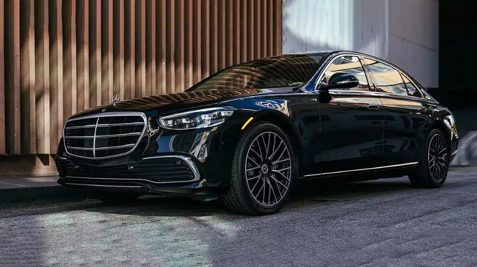

Transportation in a major metropolitan city requires efficiency, comfort, and reliability. In a vibrant and busy destination like Chicago, travelers often look for transportation solutions that go beyond basic mobility. While taxis, public transit, and ride-sharing services are widely available, many passengers prefer black car services for their higher level of comfort and professionalism. These services have become a preferred choice for business executives, tourists, and individuals who value convenience and style.

Black car services represent a refined approach to urban transportation. They focus on delivering a seamless experience where punctuality, luxury, and personalized service come together. From airport transfers to corporate travel and special occasions, these services have established themselves as a premium option in the transportation industry.
The Meaning of Premium Transportation
Premium transportation refers to services designed to provide a superior travel experience compared to conventional options. It emphasizes quality vehicles, professional drivers, customer-focused service, and a comfortable environment for passengers.
Black car services typically use high-end vehicles known for their elegant design and advanced features. These vehicles are maintained to high standards to ensure a clean, comfortable, and quiet ride. Unlike standard transportation options, the focus is not only on getting passengers from one place to another but also on making the journey pleasant and stress-free.
In a large city where traffic and time constraints are common, having access to a dependable and comfortable transportation service adds significant value to both personal and professional travel.
Professional Chauffeurs Enhance the Experience
One of the most defining features of a premium black car service is the professionalism of the chauffeurs. Drivers are trained to provide courteous and attentive service while maintaining a high level of professionalism.
Chauffeurs typically have extensive knowledge of city routes, traffic patterns, and alternative roads that help ensure timely arrivals. This expertise is especially valuable in busy urban environments where congestion can easily delay travel plans.
In addition to driving skills, chauffeurs are trained in customer service. They assist with luggage, open doors, and ensure that passengers feel comfortable throughout the journey. Their calm and professional demeanor creates a welcoming atmosphere that enhances the overall travel experience.
Luxury Vehicles for Comfort and Style
Luxury vehicles are another major reason why black car services are considered a premium transportation option. These vehicles are chosen for their comfort, advanced technology, and elegant design.
Passengers can expect spacious interiors, comfortable seating, climate control, and a quiet environment that allows them to relax or work during the trip. Many vehicles also feature modern amenities that enhance the overall ride quality.
The visual appeal of these vehicles also plays an important role. Arriving in a sleek and well-maintained car creates a strong impression, especially for corporate travelers attending meetings or events. The combination of style and functionality makes these vehicles suitable for both professional and personal travel needs.
Reliability and Punctuality
Reliability is one of the most important factors in transportation. Black car services place a strong emphasis on punctuality and careful scheduling to ensure that passengers arrive at their destinations on time.
Advanced booking systems and real-time tracking technologies help dispatch teams coordinate rides efficiently. Drivers monitor traffic conditions and adjust routes when necessary to avoid delays.
This reliability is particularly important for airport transfers, corporate appointments, and time-sensitive events. Passengers can travel with confidence knowing that their transportation has been carefully planned and managed.
Privacy and Personal Space
Another feature that distinguishes black car services from other transportation options is the level of privacy they offer. Passengers can enjoy a quiet and private environment throughout their journey.
This privacy is especially beneficial for business travelers who may need to make phone calls, review documents, or prepare for meetings while on the road. The calm atmosphere inside a black car allows passengers to focus on their tasks without distractions.
For leisure travelers, the private setting provides an opportunity to relax and enjoy the ride while exploring the city or heading to an event.
Personalized Service and Attention to Detail
Premium transportation services are known for their attention to detail and personalized approach. Each trip is designed to meet the specific needs of the passenger.
Reservations can often be customized based on travel schedules, preferred routes, and special requests. Drivers are prepared to accommodate different requirements, ensuring that passengers receive a tailored experience.
This level of personalization helps create a sense of exclusivity that is rarely found in standard transportation options. The goal is not just to transport passengers but to provide a refined travel experience that feels effortless and comfortable.
Ideal for Business and Corporate Travel
Black car services are widely used by professionals and corporate travelers. Business executives often require reliable transportation that reflects professionalism and efficiency.
Using a premium transportation service ensures that clients, partners, and executives travel in comfort while maintaining a polished image. Arriving at meetings or corporate events in a well-maintained luxury vehicle can enhance professional impressions.
In addition, the quiet and comfortable environment inside the vehicle allows travelers to continue working during their commute. This productivity benefit makes black car services particularly valuable for individuals with busy schedules.
Convenient Airport Transfers
Airport transportation is another area where black car services excel. Airports in major cities often experience heavy traffic and complex pickup procedures. Travelers appreciate a transportation service that simplifies this process.
A professional chauffeur typically monitors flight schedules to adjust pickup times if necessary. This ensures that passengers are picked up promptly, even if flights are delayed or arrive early.
For visitors arriving in Chicago, having a reliable ride waiting at the airport can make a significant difference in their overall travel experience. The convenience of door-to-door service helps reduce stress after long flights.
A Safe and Secure Travel Option
Safety is a priority in premium transportation services. Vehicles are regularly inspected and maintained to ensure that they meet strict safety standards.
Drivers are often carefully screened and trained to handle a variety of driving conditions. Their experience helps them navigate busy city streets while prioritizing passenger safety.
In addition to vehicle safety, black car services maintain high operational standards to ensure that each trip is handled professionally. This commitment to safety and reliability gives passengers peace of mind during their journey.
Perfect for Special Occasions and Events
Black car services are frequently used for weddings, formal events, and celebrations. These occasions often require transportation that reflects elegance and sophistication.
A luxury vehicle adds a touch of class to any event and helps create memorable experiences. Whether it is a romantic evening, a milestone celebration, or a gala event, arriving in a premium vehicle enhances the sense of occasion.
The convenience of having a dedicated chauffeur also allows passengers to focus on enjoying the event rather than worrying about parking or navigation.
Stress-Free Travel in a Busy City
Navigating a major city can be challenging, especially for visitors unfamiliar with local roads and traffic patterns. Black car services help eliminate many of the common stresses associated with urban travel.
Passengers do not need to worry about finding parking, dealing with traffic, or navigating unfamiliar streets. Instead, they can sit back and enjoy the ride while a professional driver handles all aspects of the journey.
This stress-free approach is one of the reasons why many travelers consider black car services to be a valuable and worthwhile transportation option.
Consistent High-Quality Service
Consistency is another factor that sets black car services apart from other transportation options. Passengers can expect the same high level of service each time they book a ride.
Vehicles are maintained to consistent standards, chauffeurs are trained to provide professional service, and reservations are handled with attention to detail. This consistency helps build trust and confidence among passengers who rely on these services regularly.
For frequent travelers, knowing that they can depend on a reliable transportation experience makes a significant difference in their overall travel planning.